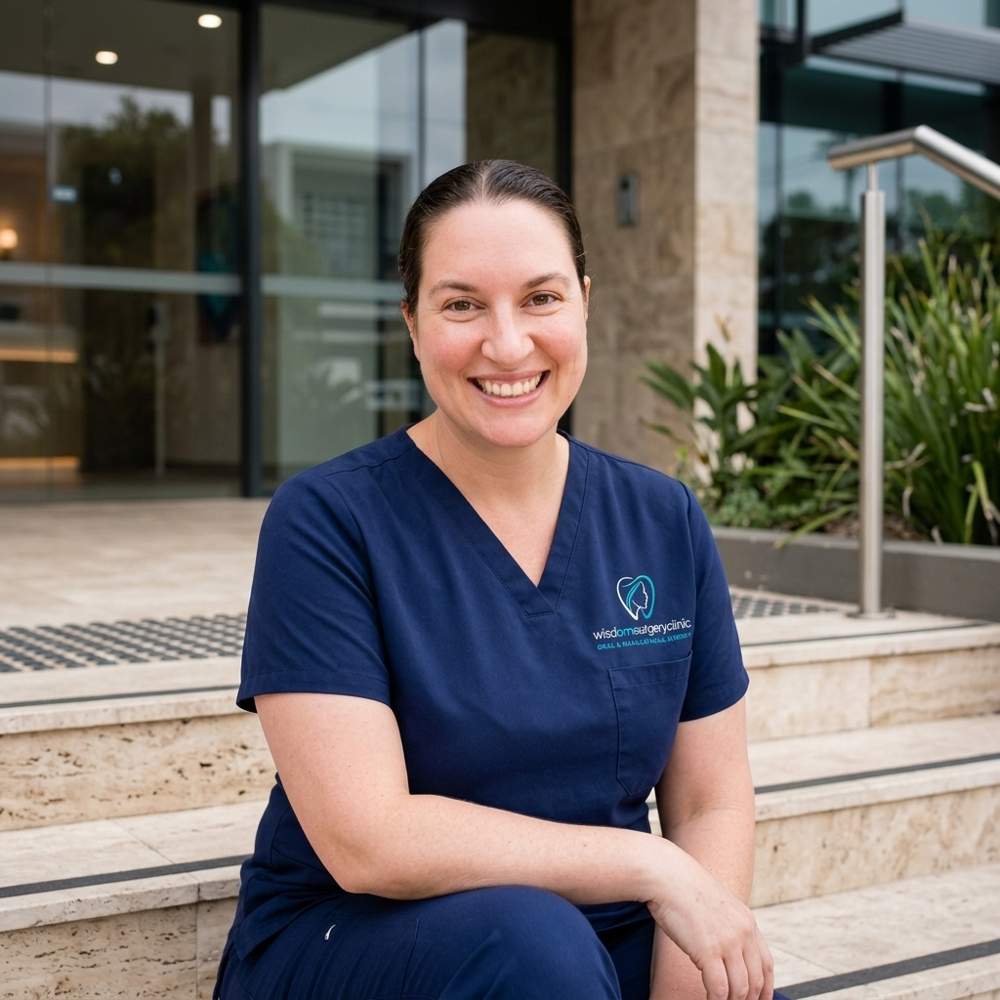

About Your Surgeon
From Dr Anna Raymond and the team at Wisdom Surgery Clinic — we're glad you're here.

I founded Wisdom Surgery Clinic to practise in a way that honours both my surgical training and my values. Surgery is rarely just a procedure — it represents trust, vulnerability, and hope. Wisdom Surgery Clinic exists to honour that trust.
I believe the best outcomes arise from collaboration, meticulous preparation, and genuine care. It is a privilege to partner with you, and I am committed to providing individualised treatment in an environment where you feel informed, respected, and supported at every stage.
Wisdom Surgery Clinic was founded to practise differently:
This is a clinic for those who value thoughtful care.
I look forward to warmly welcoming you.
Oral & Maxillofacial Surgeon
Wisdom Surgery Clinic
Dr Anna Raymond
Her story — from medicine to maxillofacial surgery.
Dr Raymond's passion for Oral and Maxillofacial Surgery started as a Brisbane-based dental student at the University of Queensland — a path that carried her across Australia and the UK, and eventually to founding Wisdom Surgery Clinic.
Graduating in 2005 with Honours, she was also awarded a prestigious medal in Oral & Maxillofacial Surgery. Returning to the UQ medical school, Dr Raymond went on to receive an MBBS (Honours) in 2010. Throughout her subsequent years as a junior doctor, she was fortunate to work and train in maxillofacial units in Brisbane, Sydney, Newcastle and Canberra as well as at a highly respected unit in the UK.
Dr Raymond also spent 12 months as a lecturer in Oral Surgery at the University of Queensland Dental School. She authored a textbook chapter in Head, Neck and Dental Emergencies, published as part of the well-known Oxford Handbook of Clinical Medicine Series in 2018.
As an expert clinician, she is well known for her warm smile, kind and gentle nature and clear communication. Dr Anna Raymond is the type of surgeon who always makes time for her patients. Her provision of genuine care compliments the entire practice of Oral and Maxillofacial Surgery at WTSC.
Dr Raymond is expert in the full scope of Oral and Maxillofacial Surgery. She looks forward to warmly welcoming patients and to provide a high level of service that supports their surgical needs. Working collaboratively with referring practitioners and maintaining the highest of clinical standards helps to ensures the best possible outcome for each and every patient.
In 2026 Wisdom Surgery Clinic was created to support her vision of this service.
Dentistry
University of Queensland — BDSc (Hons), 2005, awarded the Oral & Maxillofacial Surgery medal
Medicine
University of Queensland Medical School — MBBS (Hons), 2010
Specialist Training
Oral & Maxillofacial surgical training in Brisbane, Sydney, Newcastle and Canberra, and Exeter, UK.
Bachelor of Dental Science (Honours) — an undergraduate degree in dentistry. Dr Raymond's journey carried her into this degree, graduating with Honours from the University of Queensland in 2005.
Bachelor of Medicine, Bachelor of Surgery (Honours) — the core medical degree required to practise as a doctor. Her path led back to UQ's medical school, where she graduated with Honours in 2010, laying the foundation for her surgical career.
Fellow of the Royal Australasian College of Dental Surgeons (Oral & Maxillofacial Surgery) — the formal specialist qualification in OMS. Her training carried her to this Fellowship, the mark of her specialist expertise.
Before your visit
Complete your registration form
Takes about 10 minutes — helps us prepare for your visit.
Review our practice policies
Privacy, financial, and cancellation — good to read before your visit.
Call or connect with us for an appointment
Get an email or SMS confirmation with any details you may need.